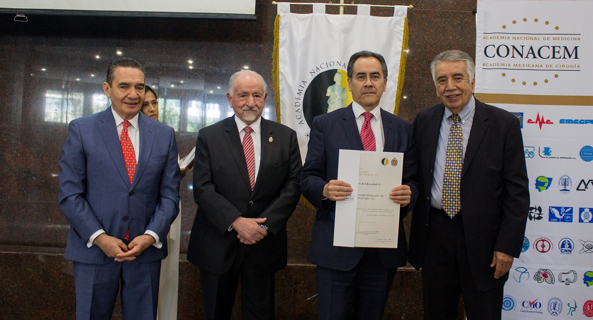

Lic. Miguel Angel Vásquez Luna
Secretario Técnico
Durante siglos, la regulación del ejercicio de la medicina ha sido una preocupación para los gobiernos y la sociedad. Numerosas referencias históricas reflejan estos hechos destinados principalmente a regular el ejercicio de la profesión médica, mejorar su calidad y proteger a la comunidad de charlatanes e impostores. Quizás el hecho más significativo fue la creación de los protomedicatos, establecidos definitivamente en España en 1565 por Felipe II y fueron los primeros concilios del mundo.1
En México, inicia la certificación en 1963, con la fundación del Consejo Mexicano de Médicos Anatomopatólogos; los consejos de especialidades médicas como cuerpos colegiados, inspirados en los Boards de Estados Unidos o del Royal College of Surgeons de Inglaterra, desde su origen han tenido como objetivo primordial verificar o controlar que todos los especialistas egresados de las Instituciones de Salud y Educación cuenten con una formación adecuada y con los conocimientos y habilidades necesarias para la atención de los pacientes en sus áreas de especialidad.2
Estos hechos determinaron que la Academia Nacional de Medicina de México prestara gran atención al progreso y desarrollo de las especialidades y la formación de consejos. Este interés culminó en 1972 cuando una comisión redactó el documento titulado “La Formación de Especialistas y el Reglamento de Especialidades”, que impulsó una serie de actividades que lograron una adecuada organización y regulación de los Consejos de Especialidad.1
El 15 de febrero de 1995 se conformó un comité integrado por miembros de la Academia Nacional de Medicina, la Academia Mexicana de Cirugía y la Junta de Consejos de Especialidades, denominado Comité Normativo Nacional de Consejos de Especialidades Médicas (CONACEM) con reglas previstas en su documento constitutivo. Se definió a partir de entonces que el único objetivo de los Consejos sería “certificar y recertificar el nivel de preparación de los médicos especialistas”.4
Los Consejos de Especialidades Médicas son órganos colegiados integrados por prestigiosos y honestos representantes de la comunidad profesional de la misma disciplina, elegidos por sus pares para asumir la responsabilidad de establecer el proceso de certificación y recertificación periódica de sus colegas profesionales y nuevos especialistas con base en los requisitos de preparación y entrenamiento en cada campo de la práctica médica y la demostración de la competencia de los especialistas.5
Actualmente existen 47 Consejos que cada 5 años deben cumplir los requisitos exigidos por CONACEM. La idoneidad debe renovarse a partir de una metodología que tiene como finalidad corroborar el cumplimiento de los requisitos documentales que para tal efecto establecen como obligatorios los artículos 17 y 18 de los Estatutos de este Comité. Asimismo, y como parte de las facultades de supervisión que tiene el CONACEM sobre el desempeño y actividades que realizan los Consejos a los que se les ha otorgado la declaratoria de idoneidad, se realiza una verificación del cumplimiento de las obligaciones previstas en el artículo 15 de los Estatutos de CONACEM.
Así entonces, la idoneidad de un Consejo de Especialidad Médica se refiere al reconocimiento otorgado por el CONACEM, que considera a una asociación civil, como una instancia colegiada compuesta por pares de cierta especialidad médica y que cumple con las formalidades y características requeridas para el óptimo desempeño de su objeto social. Además, la acreditación de CONACEM también implica que los Consejos tienen una estructura organizacional y administrativa sólida que garantiza la confiabilidad y la transparencia en los procesos de certificación y recertificación de los médicos especialistas.
En conclusión, la idoneidad que otorga CONACEM a los Consejos de Especialidades Médicas es fundamental para dar certeza de la calidad de la formación de los médicos especialistas. Esta acreditación asegura que los Consejos cumplen con los estándares y requisitos necesarios para realizar los procesos de certificación y recertificación de sus pares. De esta manera, la población mexicana puede estar segura de que está recibiendo una atención médica de calidad por parte de los médicos especialistas certificados.

Referencias bibliográficas
1.- Palabras pronunciadas por el Dr. Víctor M. Espinosa de los Reyes. Coordinador del Comité Normativo Nacional de Consejos de Especialidad Médica, con motivo del evento para dar a conocer el Convenio de Concentración para el Registro de Certificados de Especialidad Médica. Presentado el 14 de julio de 1999, Auditorio de la Academia Nacional de Medicina.
2.- Sesión ordinaria de la Academia Nacional de Medicina, 18 de mayo de 2005. Simposio CONACEM situación actual y nuevas propuestas Dr. Norberto Treviño García Manzano.
3.- ¿Qué son y qué no son los consejos de certificación de médicos especialistas? Dr. José de J. Villalpando Casas. Resultados de la reunión de trabajo de los 47 consejos de especialidades médicas para el consenso de lineamientos generales para la certificación y recertificación. 5 de abril de 2003.